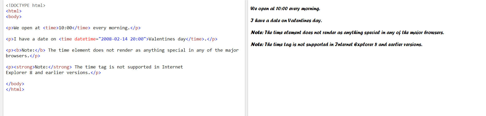

The strong tag is used to highlight the text by making it bold.
Syntax :<strong>Text to be bolded</strong>
2.Horizontol Line Tag
This tag is used to draw a horizontal line in the web page.It is an empty tag.
Syntax :<hr>
3.Break Tag
Break tags are generally use to skip a line and continue writing the text from the next line.
Syntax :</br>
4.Supscript and Subscript Tag
The supscript tag is used to assign expopnential power to the texts(generally used for mathematical terms).Similarly,the subscript tags are used to assign a base to some text.
Syntax for supscript tag :<sup></sup>
Syntax for subscript tag :<sub></sub>
5.Image Tag
It is used to import images in the page.It is an empty tag i.e.it has an opening tag but no closing tag.
Syntax :<img src="xyz.jpg">
6.Underline Tag
The underline tag is used to underline some text in order to highlight it.
Syntax :<u></u>
7.Striked Textline Tag
This tag is used to have striked words.
Syntax :<s></s>
8.Itallic Textline Tag
It is used to assign the font style to itallic.The texts written between its opening and closing tag are in itallic form.
Syntax :<i></i>
9.Font Tag
The font tag is used to assign font style ,size and color to the texts.
Syntax :<font style="color:green" size="6"></font>
10.Time Tag

The <time> tag defines a human-readable date/time.
This element can also be used to encode dates and times in a machine-readable way so that user agents can offer to add birthday reminders or scheduled events to the user's calendar, and search engines can produce smarter search results.
Syntax :<time></time>
11.Link Tag

The <link> tag defines a link between a document and an external resource.
The <link> tag is used to link to external style sheets.
Syntax :<link rel="stylesheet" type="text/css" href="theme.css">
12.Delete Tag
The <del> tag defines text that has been deleted from a document.
Syntax :<del></del>
13.Insertion Tag
The <ins> tag defines a text that has been inserted into a document.
Syntax :<ins></ins>
14.Audio Tag
The <audio> tag defines sound, such as music or other audio streams.
Currently, there are 3 supported file formats for the <audio> element: MP3, WAV, and OGG.
Syntax :<audio controls><source src="xyz.mp3" type="audio/mpeg"></audio>
15.Video Tag
The <video> tag specifies video, such as a movie clip or other video streams.
Currently, there are 3 supported video formats for the <video> element: MP4, WebM, and Ogg.
Syntax :<video width="320" height="240" controls><source src="xyz.mp4" type="video/mp4"></video>
16.Navigation Tag
The <nav> tag defines a set of navigation links.
Notice that NOT all links of a document should be inside a <nav> element. The <nav> element is intended only for major block of navigation links.
Browsers, such as screen readers for disabled users, can use this element to determine whether to omit the initial rendering of this content.
Syntax :<nav><a href="/html/"></a></nav>
17.MARQUEE Tag
The <marquee> is a non-standard HTML tag which was used to create a scrolling text or an image.
It was used to make the text/image scroll horizontally across or vertically down the web page.